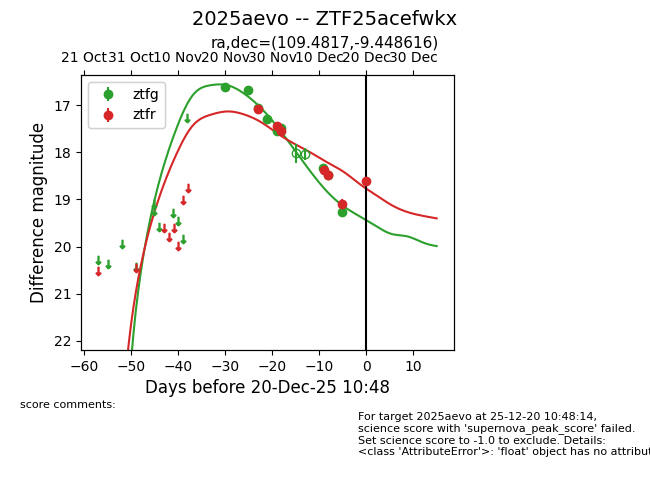
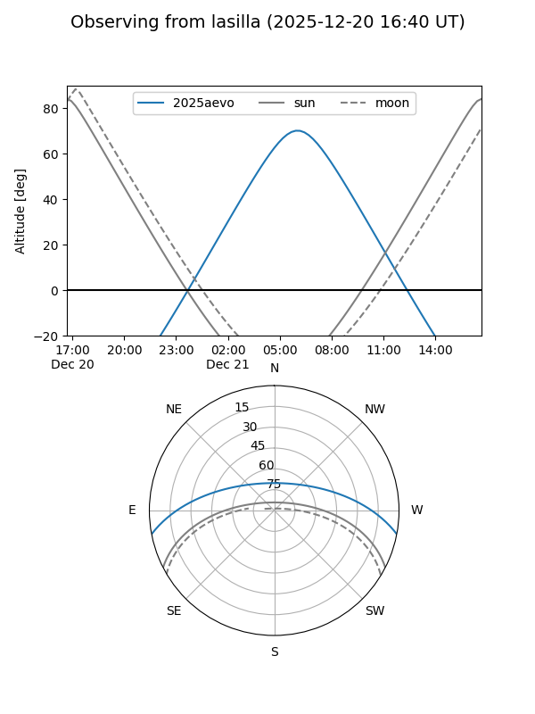
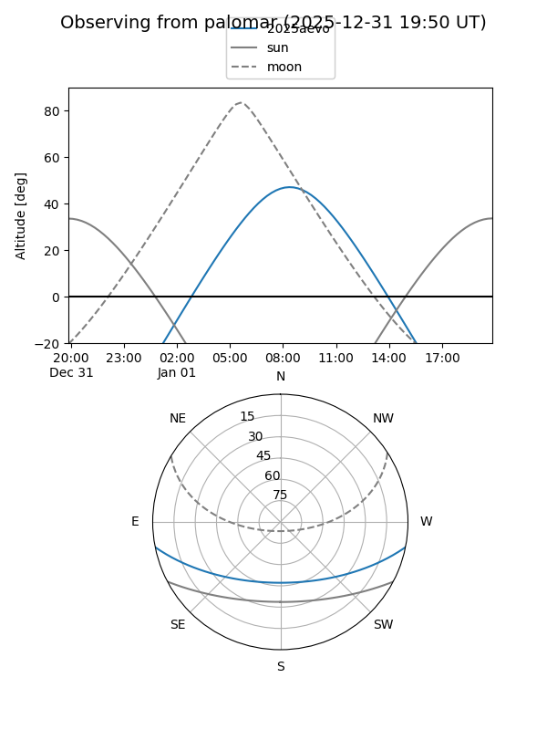
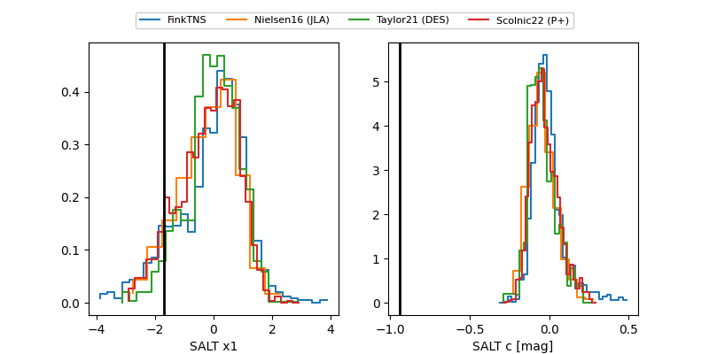

2025aevo
Target 2025aevo at 2025-12-22 14:03
Aliases and brokers:
FINK: fink-portal.org/ZTF25acefwkx
Lasair: lasair-ztf.lsst.ac.uk/objects/ZTF25acefwkx
ALeRCE: alerce.online/object/ZTF25acefwkx
TNS: wis-tns.org/object/2025aevo
YSE: ziggy.ucolick.org/yse/transient_detail/2025aevo
alt names
ZTF25acefwkx (ztf,fink_ztf)
2025aevo (tns,yse)
Coordinates:
equatorial (ra, dec) = 109.4817,-9.44862
equatorial (HMS+DMS) = 07:17:55.60,-09:26:55.02
galactic (l, b) = (224.3545,+1.51203)
Flags:
Photometry:
last ztfg=18.65, ztfr=18.69
11 ztfg, 8 ztfr detections
Lightcurve

Visibility


Additional plots
